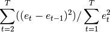

statsmodels.stats.stattools.durbin_watson¶
-
statsmodels.stats.stattools.durbin_watson(resids, axis=0)[source]¶ Calculates the Durbin-Watson statistic
Parameters: resids : array-like
Returns: dw : float, array-like
The Durbin-Watson statistic.
Notes
The null hypothesis of the test is that there is no serial correlation. The Durbin-Watson test statistics is defined as:

The test statistic is approximately equal to 2*(1-r) where
ris the sample autocorrelation of the residuals. Thus, for r == 0, indicating no serial correlation, the test statistic equals 2. This statistic will always be between 0 and 4. The closer to 0 the statistic, the more evidence for positive serial correlation. The closer to 4, the more evidence for negative serial correlation.